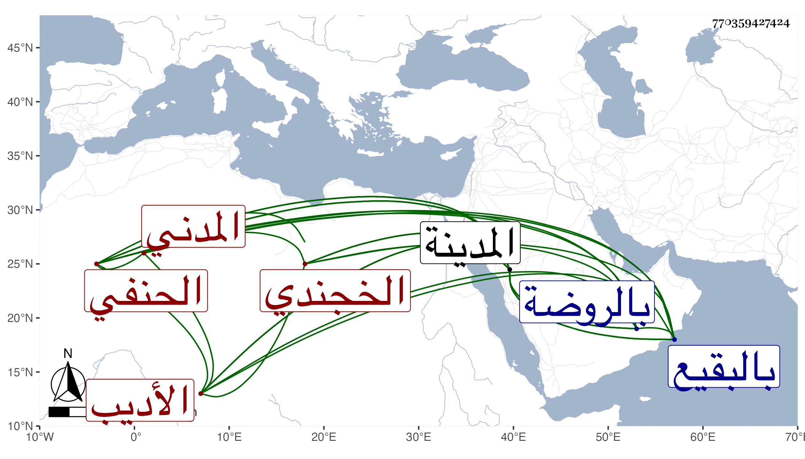

0902Sakhawi.DawLamic.ITO20230111-ara1.EIS1600.770359427424
Biography ID: 770359427424
إبراهيم بن أحمد بن محمد بن محمد بن محمد بن محمد الأديب برهان الدين أبو محمد ابن العلامة جلال الدين أبي الطاهر بن الشمس أبي عبد الله بن الجلال أبي محمد بن الجمال أبي محمد الخجندي بضم ثم فتح الأصل الاخوي بفتح الهمزة والمعجمة المدني الحنفي أخو طاهر ووالد الشمس محمد الآتيين وأبوه في محالهم ويسمى محمد أيضا . ولد في سنة تسع وسبعين وسبعمائة بالمدينة النبوية ونشأ بها فحفظ القرآن والكنز والألفية والكافية وتلا بالسبع على الشيخين عبد الله الشنيني بفتح المعجمة وكسر النونين بينهما تحتانية ويحيى التلمساني الضرير وعنه وعن والده الجلال أخذ النحو وعن أبيه وغيره الفقه وانتفع بأخيه وسمع على ابن صديق ختم الصحيح وعلى أبيه والزيون العراقي والمراغي وعبد الرحمن بن علي الأنصاري الزرندي الحنفي قاضي المدينة والبرهان ابن فرحون وابن الجزري وناصر الدين بن صالح وبأخرة على أبي الفتح المراغي وقرأ على الجمال الأسيوطي وعلى غيره ممن سميناهم وأجاز له أبو هريرة بن الذهبي والتنوخي والبلقيني وابن الملقن والهيثمي وأبو عبد الله بن مرزوق الكبير في آخرين وحج غير مرة وبرع في العربية وتعانى الأدب وجمع لنفسه ديوانا وأنشأ عدة رسائل بحيث انفرد في بلده بذلك وكان يتراسل مع سميه البرهان الباعوني مع الخط الجيد والمحاسن وقد درس وحدث بالبخاري وغيره وقرأ عليه ولده وسمع منه الطلبة ولقيه البقاعي فكتب عنه وزعم أن جيد شعره قليل ينتقل فيه من بحر إلى بحر ومن لجة إلى قفر قال وهو بالعربية غير واف وكثير منه سفساف وربما انتقل من الحضيض إلى السها كأنه ليس له قلب في مدح الناس فإذا قال في الغرام أجاد وكتب بخطه أن الأمر الذي وسم به الرافضة انهم رفضوا زيد بن علي بن الحسين حين خرج على هشام بن عبد الملك فقالوا له تبرأ من أبي بكر وعمر رضي الله عنهما فقال هما إماما عدل لا نبرأ منهما رضي الله عنهما فرفضوه ثم افترقت كل فرقة ثماني عشرة فرقة وكذا كتب على بعض الاستدعاءات قوله :
| أجزت لهم أبقاهم الله كل ما | رويت عن الأشياخ في سالف الدهر |
| ومالي من نثر ونظم بشرطة | على رأى من يروي الحديث ومن يقرى |
| وأسال إحسانا من القوم دعوة | تحقق لي الآمال والأمن في الحشر |
وأوردت من نظمه في ترجمته من معجم المدنيين غير ذلك وكان فاضلا بارعا ناظما ناثرا بليغا محبا للفائدة كيسا حسن المجالسة لطيف المحاضرة كثير النوادر والملح ذا كرم زائد وآداب وغرائب . مات في ثاني رجب سنة إحدى وخمسين بالمدينة النبوية ودفن من يومه بالبقيع بعد الصلاة عليه بالروضة رحمه الله . وهو عند المقريزي في عقوده باختصار وغلط فسمى جده أحمد وكناه أبا إسحاق ووصفه بالأديب وأنشد له :
| كن جوابي إذا قرأت كتابي | لا تردن للجواب كتابا |
| واعفني من نعم وسوف ولي شغل وكن خير من دعي فاجابا |
